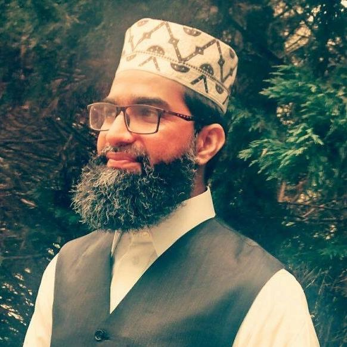

Islamic Center of Morrisville
107 Quail Fields Court
Morrisville, NC 27560
About ICM
ICM began as a response to the needs of a growing Muslim community around Morrisville and RTP. The masjid welcomes residents from many backgrounds and offers Islamic programs for children, youth, adults, and families.
As attendance has grown, ICM has made room for multiple Jumu'ah shifts, regular Quran learning, youth halaqas, women's gatherings, social welfare work, and weekend education.
Imam Manzar was born in India in 1980 and completed an eight-year Alim education in a traditional seminary, studying Islamic sciences and languages including Urdu, Persian, Hindi, and Arabic.
He earned an undergraduate degree in Islamic Studies from Al-Azhar University in Cairo and completed Mufti training through Egypt's Dar al-Ifta. After moving to the United States, he studied at UNC Chapel Hill and Duke University, taught at Duke, and continued advanced academic work in Islamic studies.
His public biography notes more than 50 research papers and books, presentations at international universities, and ongoing service to the ICM community through scholarship, classes, reminders, and guidance.
Contact: imam@icmnc.org

107 Quail Fields Court
Morrisville, NC 27560
contact@icmnc.org
For prayer, facility, and general masjid questions.
Al Mizan: almizaan@icmnc.org
Social Welfare: socialwelfare@icmnc.org
Volunteer Hours: volunteer@icmnc.org